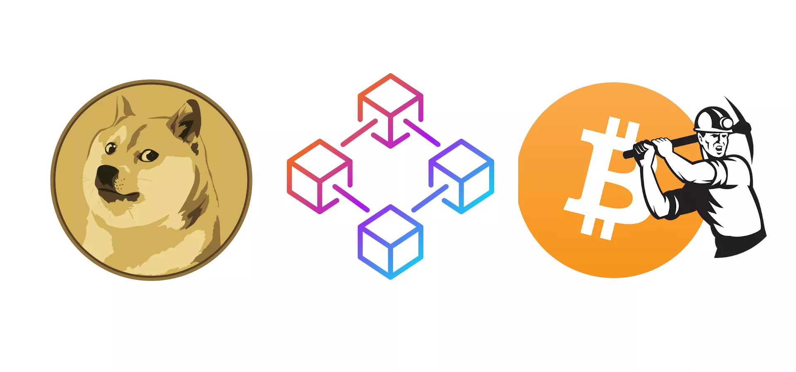
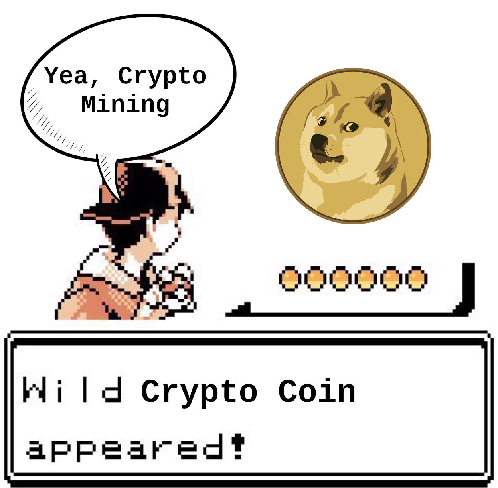
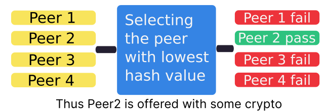
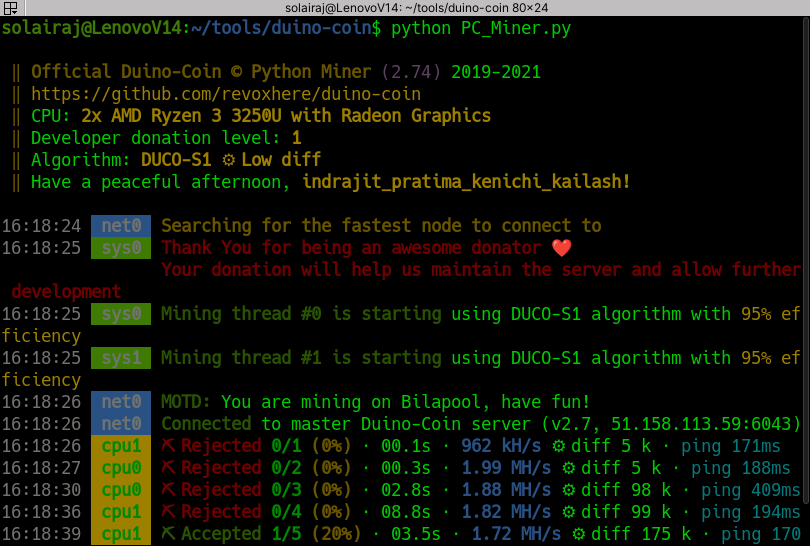

Hello there friends, Welcome to Solai’s Blog so in this topic lets see about Cryptocurrency mining.

Cryptocurrency or Decentralized Money is where the money circulation and transaction is being decentralized and managed by a chain of computational devices known as blockchain. Cryptocurrency or Decentralized Money is where the money circulation and transaction is being decentralized and managed by a chain of computational devices known as blockchain. A pseudonymous person named Satoshi Nakamoto founded a cryptocurrency under the name of Bitcoin in the year of 2009.
As we discussed early that cryptocurrency is managed by a billion of decentralized computer system chained together named as blockchain. In short, mining is contributing our computational resource to the blockchain by joining the blockchain, Mining crypto is relatively simpler than mining diamonds out of caves.

Mining is not making money out of thin air, yea it does sort of but at some expenses, To join a blockchain you would be processing transactions made by users and create an entry in ledger, ledger is long spreadsheet consisting of every transaction details and a hash code representing the transaction, so there beings the competition where thousands of people given a transaction to process with and create a hash value for it and every peer or people sends the hash value calculated, the first person or peer to calculate lesser hash value would be selected as successful peer to join the blockchain hence the peer would be rewarded with some cryptocurrency, Whoa! Congrats, you just mined some coins.

Now we got some information on how mining works, now let’s get into the main part Mining Crypto but without our personal computer. As we know the mining process requires calculation of hash values of a random number associated with the transaction and the hash value should be lesser in value otherwise it is rejected, so we need a computer that can computer several hashes per second this rate is called hash rates, each crypto sets different difficult values and algorithms for hashing hence the hash rates changes for different CPU, GPU and Cryptocurrencies.
You can find your Processor / Graphics Unit’s hash rates here. Unfortunately the bigger coins such as Bitcoin, Litecoin, Ethereum cannot be mined with basic CPU or GPU they need some application specific utilities such as ASIC. It’s okay, we have got a lot of coins out there which can be mined with just a CPU, such as Duino coin.
$ python3 PC_Miner.py command from Terminal
(for Linux) or CMD (for Windows).

Web Developer, Frontend and Backend, Flutter Developer,IoT Enthusiast and a Student